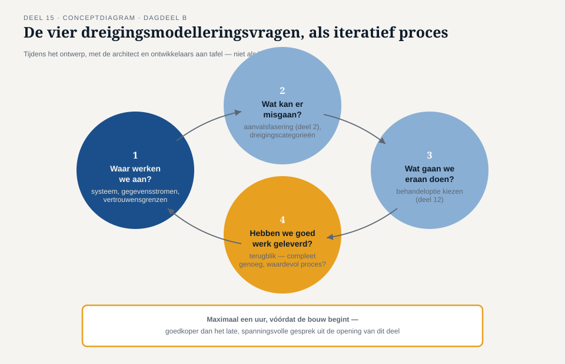
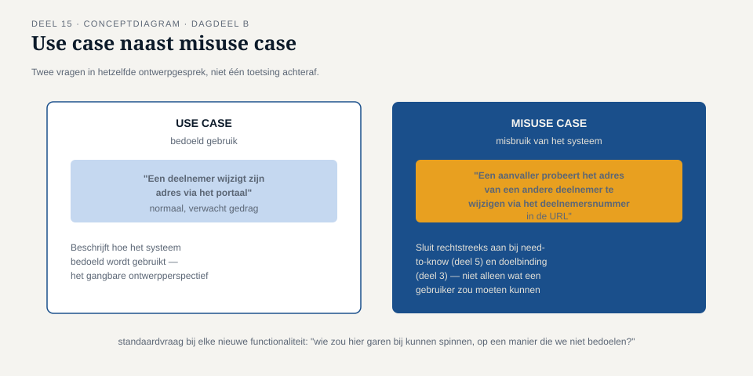

Deel 15 — Annex A II: technologische en fysieke controls, en beveiliging in het ontwerp
Slidedeck · Ductus-cursus Informatiebeveiliging en privacy · niveau 2 · deel 15 van 22 · 24 slides
Slide 1 — Titel
Informatiebeveiliging en Privacy
Deel 15 · Niveau 2 · Professional · Twee dagdelen
Annex A II + beveiliging in het ontwerp
Slide 2 — Het gesprek dat te laat kwam
Drie weken voor livegang. Merel kijkt voor het eerst grondig mee.
Tarik: "Ik dacht dat security aan het eind kwam."
Slide 3 — Merels antwoord
"Als ik nu pas kijk, kan ik alleen nog afkeuren.
Duur, laat, en het went nooit."
DAGDEEL A — De controls zelf
Slide 4 — Technologische controls (34)
Toegangsbeheer · Cryptografie · Netwerkbeveiliging
Systeemontwikkeling · Logging en monitoring
Grotendeels: niveau 1, nu geformaliseerd.
Slide 5 — Opdracht 15.1
Vier controls. Koppel aan het deel uit niveau 1.
Slide 6 — Fysieke controls (14)
Toegang tot gebouwen/serverruimtes.
Apparatuurbeveiliging.
Clear desk, clear screen.
Slide 7 — Het meest onderschatte risico
Een dossier op een bureau, gezien door een bezoeker
= dezelfde vertrouwelijkheidsschending als een digitale inbraak.
Minder spectaculair. Daarom vaker vergeten.
Slide 8 — Opdracht 15.2
Waarom wordt dit risico vaak onderschat?
PAUZE / OVERGANG DAGDEEL B
DAGDEEL B — Beveiliging in het ontwerp
Slide 9 — Terug naar de opening
Aan het eind: alleen nog afkeuren of tegenzin accepteren.
De oorzaak: beveiliging als nagedachte, niet als ontwerpeis.
Slide 10 — Security by design
Beveiligingsoverwegingen vanaf de eerste ontwerpkeuze.
Niet achteraf getoetst.
Slide 11 — Privacy by design
Het AVG-equivalent. Wettelijk verankerd.
"Hoe zou dit ontwerp gegevens onnodig kunnen blootstellen?"
Slide 12 — Hetzelfde ontwerpgesprek
Niet twee gescheiden trajecten.
Eén gesprek, twee vragen tegelijk.
Slide 13 — Opdracht 15.3
Drie ontwerpoverwegingen. Security, privacy, of allebei?
Slide 14 — Dreigingsmodellering

- Waar werken we aan?
- Wat kan er misgaan?
- Wat gaan we eraan doen?
- Hebben we goed werk geleverd?
Slide 15 — Het verschil met deel 12
Risicobeoordeling: apart traject, achteraf.
Dreigingsmodellering: tíjdens het ontwerp, mét de bouwers.
Slide 16 — Opdracht 15.4
Doorloop de vier vragen voor: "adres wijzigen via het portaal."
PAUZE
Slide 17 — Misuse cases

Use case: hoe het systeem bedoeld wordt gebruikt.
Misuse case: hoe het misbruikt zou kunnen worden.
Slide 18 — Voorbeeld
Use case: deelnemer wijzigt eigen adres.
Misuse case: aanvaller past deelnemersnummer in de URL aan.
Slide 19 — Opdracht 15.5
Schrijf zelf een use case + misuse case voor een andere functionaliteit.
Slide 20 — Het vaste ritueel
Bij elke nieuwe module: max. 1 uur, vóór de bouw begint.
Vier vragen + minstens twee misuse cases.
Goedkoper dan het gesprek uit de opening.
Slide 21 — Waar de twee kunnen botsen
Uitgebreide logging: goed voor security by design.
Dezelfde logging: spanning met privacy by design.
Slide 22 — Opdracht 15.6
Waarom levert uitgebreide logging deze spanning op?
Hoe gaat het gesprek daarmee om?
Slide 23 — Niet één winnaar
Het gesprek is er om de afweging samen te maken —
niet om de ene discipline de andere te laten overrulen.
Slide 24 — Vooruitblik
Deel 16: DPIA I —
wanneer verplicht, hoe uitgevoerd, wie beslist